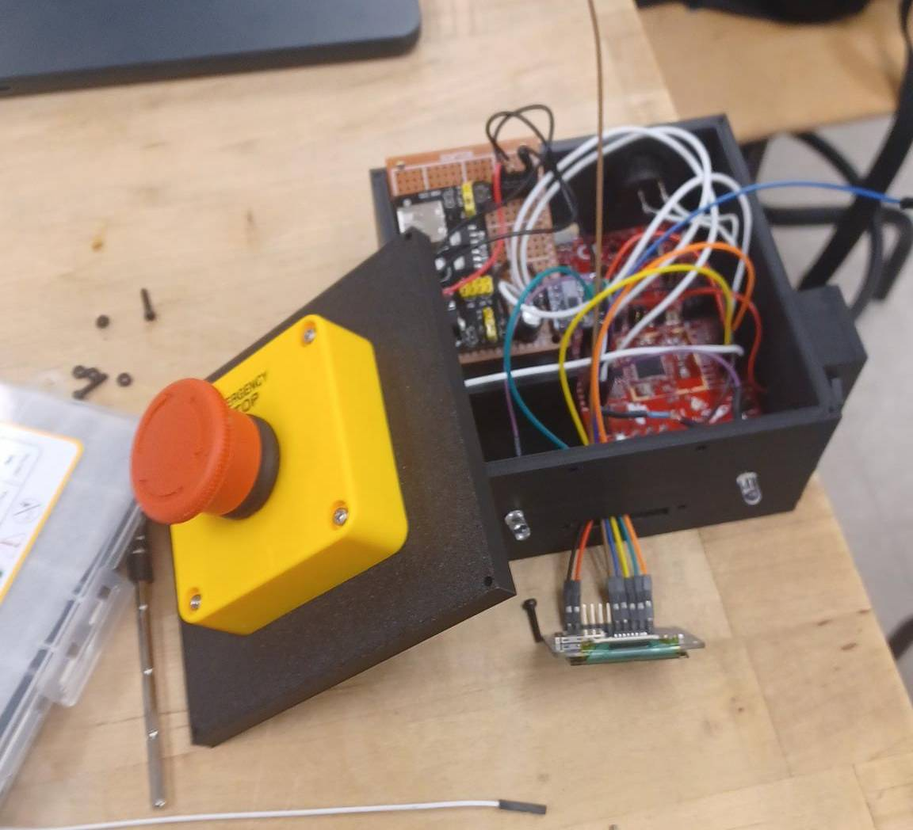

UNDER CONSTRUCTION

Counter-Strike is a series of first person shooters developed by Valve Corporation. Its latest iteration is the game Counter-Strike: Global Offensive In this game, teams of Counter-Terrorists(CTs) and Terrorists(Ts) face off to either eliminate each other or complete their given objectives. The Terrorists are tasked with planting a bomb at a bombsite and blowing it up, while the Counter-Terrorists are seeking to prevent that from happening from within the given time limit. After the bomb has been planted, the CTs have to defuse the bomb to win. The game also incorporates a money system, where the game rewards kills based on the weapon used. The game also gives money for winning/losing a round (more money for winning); however, if rounds are lost in succession, a loss bonus can be earned. Money can be used to buy more powerful weapons, equipment such as armor or bomb defuse kit (which speeds up a defuse), or grenades that can be used as utility.